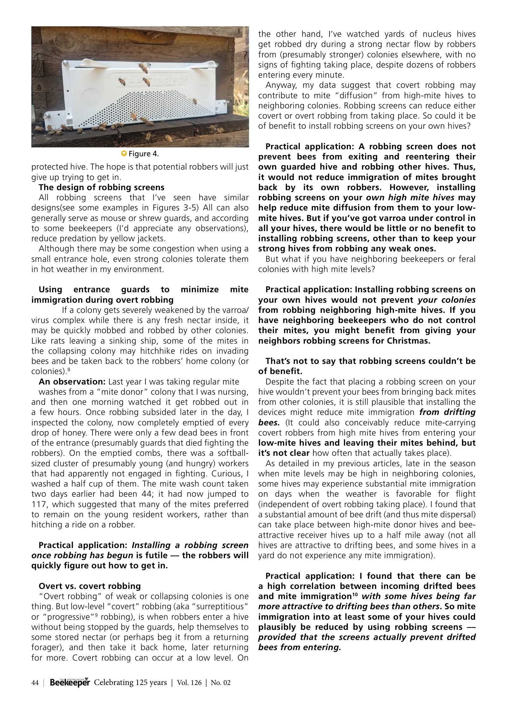

Figure 4.
protected hive. The hope is that potential robbers will just
give up trying to get in.
The design of robbing screens
All robbing screens that I’ve seen have similar
designs(see some examples in Figures 3-5) All can also
generally serve as mouse or shrew guards, and according
to some beekeepers (I’d appreciate any observations),
reduce predation by yellow jackets.
Although there may be some congestion when using a
small entrance hole, even strong colonies tolerate them
in hot weather in my environment.
Using
entrance
guards
to
minimize
mite
immigration during overt robbing
If a colony gets severely weakened by the varroa/
virus complex while there is any fresh nectar inside, it
may be quickly mobbed and robbed by other colonies.
Like rats leaving a sinking ship, some of the mites in
the collapsing colony may hitchhike rides on invading
bees and be taken back to the robbers’ home colony (or
colonies).8
An observation: Last year I was taking regular mite
washes from a “mite donor” colony that I was nursing,
and then one morning watched it get robbed out in
a few hours. Once robbing subsided later in the day, I
inspected the colony, now completely emptied of every
drop of honey. There were only a few dead bees in front
of the entrance (presumably guards that died fighting the
robbers). On the emptied combs, there was a softball-
sized cluster of presumably young (and hungry) workers
that had apparently not engaged in fighting. Curious, I
washed a half cup of them. The mite wash count taken
two days earlier had been 44; it had now jumped to
117, which suggested that many of the mites preferred
to remain on the young resident workers, rather than
hitching a ride on a robber.
Practical application: Installing a robbing screen
once robbing has begun is futile –– the robbers will
quickly figure out how to get in.
Overt vs. covert robbing
“Overt robbing” of weak or collapsing colonies is one
thing. But low-level “covert” robbing (aka “surreptitious”
or “progressive”9 robbing), is when robbers enter a hive
without being stopped by the guards, help themselves to
some stored nectar (or perhaps beg it from a returning
forager), and then take it back home, later returning
for more. Covert robbing can occur at a low level. On
the other hand, I’ve watched yards of nucleus hives
get robbed dry during a strong nectar flow by robbers
from (presumably stronger) colonies elsewhere, with no
signs of fighting taking place, despite dozens of robbers
entering every minute.
Anyway, my data suggest that covert robbing may
contribute to mite “diffusion” from high-mite hives to
neighboring colonies. Robbing screens can reduce either
covert or overt robbing from taking place. So could it be
of benefit to install robbing screens on your own hives?
Practical application: A robbing screen does not
prevent bees from exiting and reentering their
own guarded hive and robbing other hives. Thus,
it would not reduce immigration of mites brought
back by its own robbers. However, installing
robbing screens on your own high mite hives may
help reduce mite diffusion from them to your low-
mite hives. But if you’ve got varroa under control in
all your hives, there would be little or no benefit to
installing robbing screens, other than to keep your
strong hives from robbing any weak ones.
But what if you have neighboring beekeepers or feral
colonies with high mite levels?
Practical application: Installing robbing screens on
your own hives would not prevent your colonies
from robbing neighboring high-mite hives. If you
have neighboring beekeepers who do not control
their mites, you might benefit from giving your
neighbors robbing screens for Christmas.
That’s not to say that robbing screens couldn’t be
of benefit.
Despite the fact that placing a robbing screen on your
hive wouldn’t prevent your bees from bringing back mites
from other colonies, it is still plausible that installing the
devices might reduce mite immigration from drifting
bees. (It could also conceivably reduce mite-carrying
covert robbers from high mite hives from entering your
low-mite hives and leaving their mites behind, but
it’s not clear how often that actually takes place).
As detailed in my previous articles, late in the season
when mite levels may be high in neighboring colonies,
some hives may experience substantial mite immigration
on days when the weather is favorable for flight
(independent of overt robbing taking place). I found that
a substantial amount of bee drift (and thus mite dispersal)
can take place between high-mite donor hives and bee-
attractive receiver hives up to a half mile away (not all
hives are attractive to drifting bees, and some hives in a
yard do not experience any mite immigration).
Practical application: I found that there can be
a high correlation between incoming drifted bees
and mite immigration10 with some hives being far
more attractive to drifting bees than others. So mite
immigration into at least some of your hives could
plausibly be reduced by using robbing screens ––
provided that the screens actually prevent drifted
bees from entering.
44 |
Celebrating 125 years | Vol. 126 | No. 02